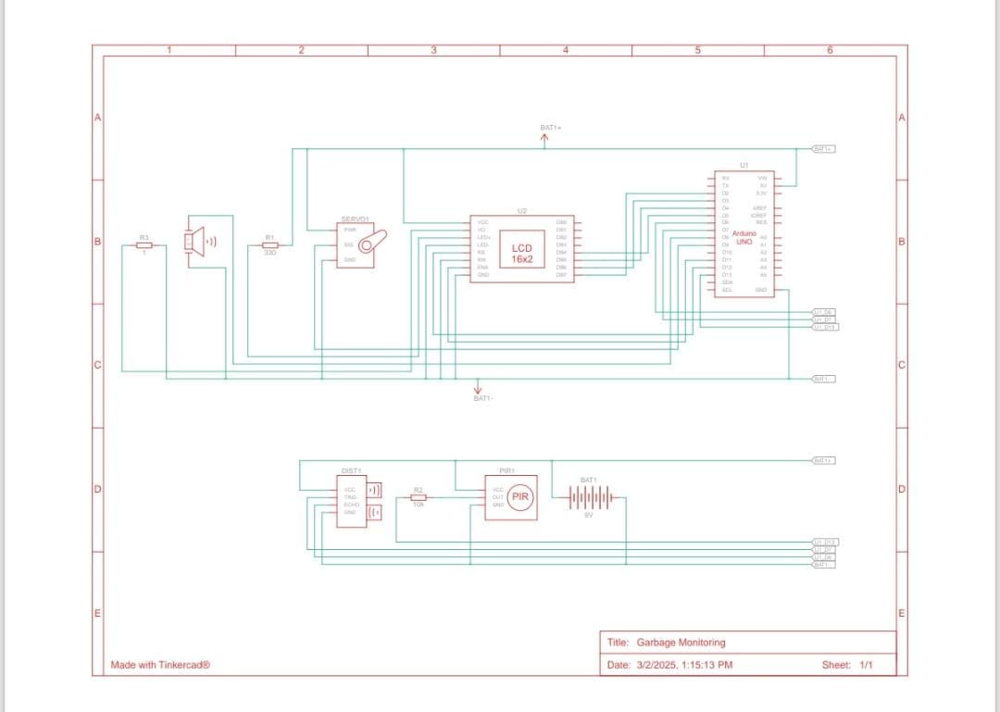

Garbage Monitoring
By Arghya Roy
📅 Post Date: March 5, 2025
Concept
A Smart Cleaner using Arduino is an automated cleaning system that uses sensors and actuators to detect dust, obstacles, and floor surfaces. It can integrate ultrasonic sensors for navigation, a motorized cleaning mechanism, and IoT connectivity for remote monitoring. This enhances efficiency, making cleaning autonomous and intelligent.
Components Required
- Positional Micro Servo (SERV01) - Quantity: 1
- Arduino Uno R3 (U1) - Quantity: 1
- PIR Sensor (PIR1) - Quantity: 1
- LCD 16 x 2 (U2) - Quantity: 1
- 330 Ω Resistor (R1) - Quantity: 1
- Piezo (PIEZO1) - Quantity: 1
- 10 kΩ Resistor (R2) - Quantity: 1
- 1 Ω Resistor (R3) - Quantity: 1
- Ultrasonic Distance Sensor (4-pin) (DIST1) - Quantity: 1
- 9V Battery (BAT1) - Quantity: 1
- Power Connections: Connect the 9V battery's positive terminal to the Vin pin of the Arduino and the negative terminal to the GND. Also, connect the Arduino's 5V and GND to the breadboard.
- LCD Display (I2C): Connect its VCC and GND to the breadboard’s 5V and GND. Connect SDA to A4 and SCL to A5 of Arduino.
- Ultrasonic Sensor (HC-SR04): VCC and GND go to 5V and GND. Connect Trig to D9 and Echo to D10.
- PIR Sensor: Connect VCC to 5V, GND to GND, and Output to D8.
- Buzzer: Connect positive to D7 and negative to GND.
- Servo Motor: VCC to 5V, GND to GND, and signal to D6.
- Final Check: Ensure all connections are secure before uploading the code.
Components List
Connections
Circuit Diagram
Prototype Overview

Arduino Code
// C++ code
#include
#include
// Define Pins
#define TRIG_PIN 7
#define ECHO_PIN 6
#define PIR_PIN 3
#define SERVO_PIN 9
#define BUZZER_PIN 8
// LCD (Parallel Connection)
LiquidCrystal lcd(12, 11, 5, 4, 3, 2);
Servo dustbinServo;
// Garbage Level Threshold
const int garbageFullThreshold = 50;
void setup() {
pinMode(TRIG_PIN, OUTPUT);
pinMode(ECHO_PIN, INPUT);
pinMode(PIR_PIN, INPUT);
pinMode(BUZZER_PIN, INPUT);
Serial.begin(9600); // Debugging
dustbinServo.attach(SERVO_PIN);
dustbinServo.write(10); // Start at slightly open position
lcd.begin(16, 2);
lcd.setCursor(0, 0);
lcd.print(" Smarto Trashcan ");
lcd.setCursor(0, 1);
lcd.print(" Waste Monitor ");
delay(2000);
lcd.clear();
}
void loop() {
// Measure Distance (Ultrasonic)
long duration;
int distance;
digitalWrite(TRIG_PIN, LOW);
delayMicroseconds(2);
digitalWrite(TRIG_PIN, HIGH);
delayMicroseconds(10);
digitalWrite(TRIG_PIN, LOW);
duration = pulseIn(ECHO_PIN, HIGH);
distance = duration * 0.034 / 2;
// Display on LCD
lcd.setCursor(0, 0);
lcd.print("Garbage Level:");
lcd.setCursor(0, 1);
lcd.print(distance);
lcd.print(" cm "); // Clears extra characters
// If Garbage is Full, Ring Buzzer
if (distance < garbageFullThreshold) {
digitalWrite(BUZZER_PIN, HIGH);
delay(1000);
digitalWrite(BUZZER_PIN, LOW);
}
// PIR Sensor for Lid
int motion = digitalRead(PIR_PIN);
Serial.print("PIR Motion: "); Serial.println(motion); // Debugging
if (motion == HIGH) {
Serial.println("Motion detected! Opening lid...");
openLid();
delay(3000);
Serial.println("Closing lid...");
closeLid();
}
delay(500); // Short delay before next loop
}
// ✅ Fixed Servo Function with Debugging
void openLid() {
Serial.println("Opening Servo...");
for (int pos = 10; pos <= 100; pos += 5) { // Move gradually
dustbinServo.write(pos);
Serial.print("Servo Position: "); Serial.println(pos);
delay(50);
}
}
void closeLid() {
Serial.println("Closing Servo...");
for (int pos = 100; pos >= 10; pos -= 5) { // Move back gradually
dustbinServo.write(pos);
Serial.print("Servo Position: "); Serial.println(pos);
delay(50);
}